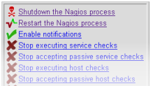

Starting and Stopping Nagios
 Up To: Contents
Up To: Contents
 See Also: Verifying Your Configuration
See Also: Verifying Your Configuration
There's more than one way to start, stop, and restart Nagios. Here are some of the more common ones...
 Tip: Always make sure you verify your configuration before you (re)start Nagios.
Tip: Always make sure you verify your configuration before you (re)start Nagios.
Starting Nagios
- Init Script: The easiest way to start the Nagios daemon is by using the init script like so:
/etc/rc.d/init.d/nagios start
- Manually: You can start the Nagios daemon manually with the -d command line option like so:
/usr/local/nagios/bin/nagios -d /usr/local/nagios/etc/nagios.cfg
Restarting Nagios
Restarting/reloading is nececessary when you modify your configuration files and want those changes to take effect.
- Init Script: The easiest way to restart the Nagios daemon is by using the init script like so:
/etc/rc.d/init.d/nagios reload
- Web Interface: You can restart the Nagios through the web interface by clicking the "Process Info" navigation link and selecting "Restart the Nagios process":

- Manually: You can restart the Nagios process by sending it a SIGHUP signal like so:
kill -HUP <nagios_pid>
Stopping Nagios
- Init Script: The easiest way to stop the Nagios daemon is by using the init script like so:
/etc/rc.d/init.d/nagios stop
- Web Interface: You can stop the Nagios through the web interface by clicking the "Process Info" navigation link and selecting "Shutdown the Nagios process":
- Manually: You can stop the Nagios process by sending it a SIGTERM signal like so:
kill <nagios_pid>